Las inversiones de empresas españolas tuvieron un papel clave en el desarrollo y liberalización económica de América Latina en la década pasada y , a comienzos del nuevo año , se perfilan como un actor principal en el futuro de la región , según analistas y economistas de Wall Street.
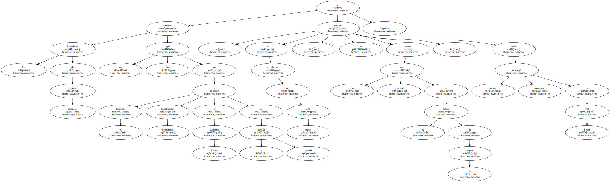Se calcula que la inversión española directa en América Latina ascendió en 1998 a 12.636 millones de dólares , de acuerdo con las cifras facilitadas del propio gobierno español.
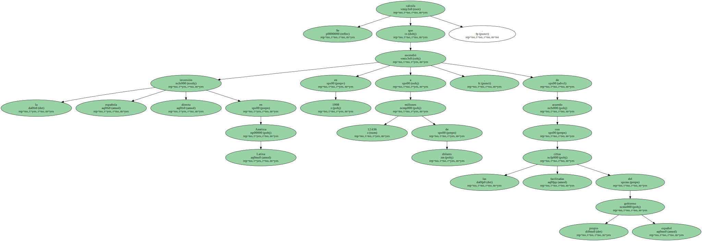Este volumen ( el último disponible ) se acerca a los 14.300 millones de dólares que invirtieron las empresas de EEUU ese año en la zona y posicionan a España como una fuerza económica muy poderosa en la región.
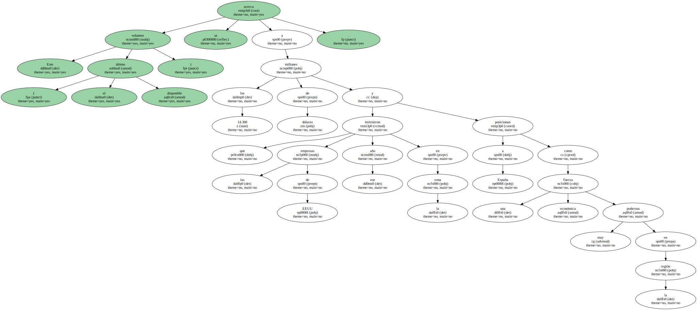La corriente de inversiones españolas encuentra unas facilidades naturales como el idioma común y la cercanía cultural , que se ha visto alentada por la visión de las empresas españolas , que desde un principio se atrevieron a invertir en un mercado que para otras compañías de otras latitudes siempre fue demasiado arriesgado.
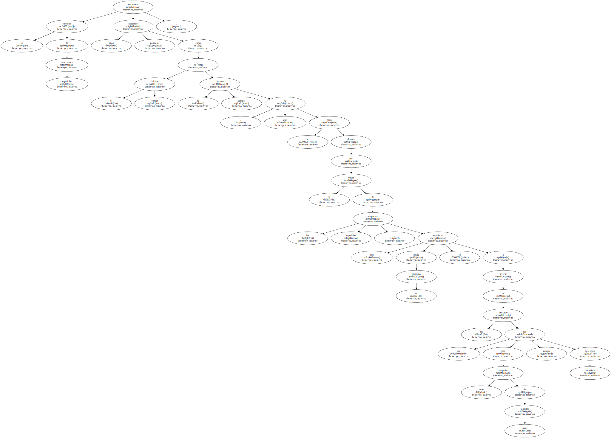Esta apuesta de las firmas españolas les permitió conocer el mercado y la forma de hacer negocios en América Latina , lo que explica porqué controlan hoy segmentos claves de la economía latinoamericana.
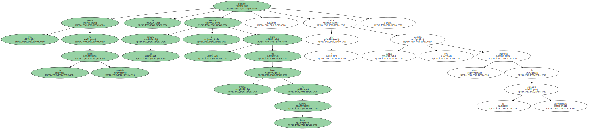Telefónica de España es el mayor operador de telecomunicaciones en la región con 49 millones de clientes y su filial para los servicios de Internet , Terra , se perfila como uno de los actores dominantes en este sector en América Latina.
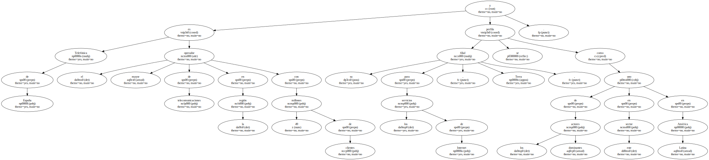Endesa España ha invertido 8.000 millones de dólares en el sector de electricidad de 12 países de América Latina ; y Repsol , en tanto , posee inversiones cercanas 9.000 millones de dólares en la industria del petróleo y la energía.

Otro sector que a juicio de los expertos ha sido clave en el desembarco de inversores españoles ha sido el bancario , donde sobresalen el BSCH y el BBVA.
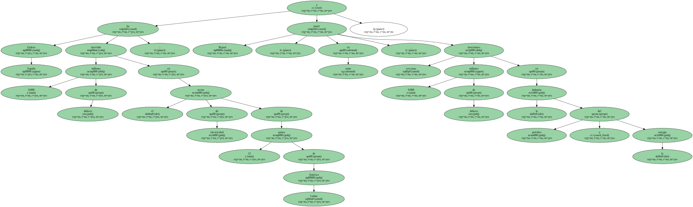Tal y como ocurre en otros sectores , donde la entrega del manejo de empresas locales a manos españolas se ha traducido en una oleada de fuertes inversiones para mejorar los servicios , en el sector financiero la entrada de los bancos españoles ha dado más seguridad a un sistema financiero muchas veces endeble.
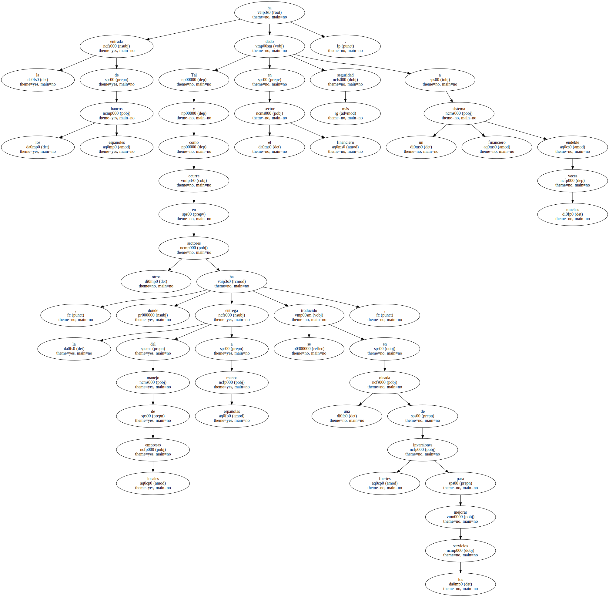El analista de ING Barings , Arturo Porcekanski , explicó a EFE que " en 1995 los bancos argentinos estaban en manos argentinas , y tras la crisis en México los inversionistas retiraron casi el 20 por ciento de los depósitos que había en la Argentina , y el país tuvo una crisis bancaria enorme ".
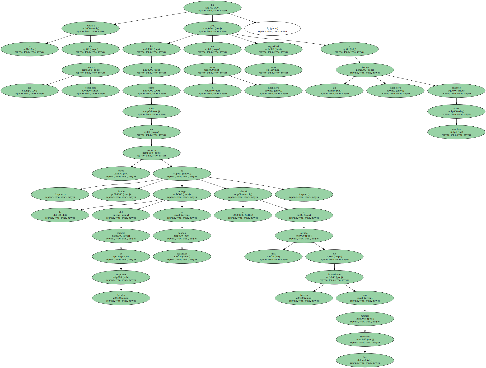" Hoy por hoy , en el período de 1997 a 99 - cuando hubo una crisis tan grave como la de los años 82 y 83 - no existió ninguna retirada de depósitos de los bancos argentinos , porque la gran mayoría de ellos están firmemente respaldados por grupos extranjeros , entre ellos de manera muy importante por los españoles " , dijo el analista.

" El desarrollo de la región sería impensable sin el interés , el apoyo , que el capital español le brindó " a los países latinoamericanos , concluyó.
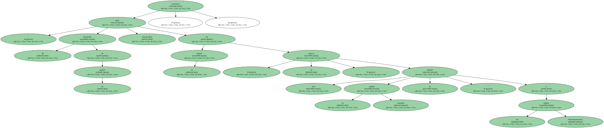Pese a estos beneficios , la fuerte corriente de inversiones españolas no ha dejado de provocar cierta preocupación , como expresó en su último informe sobre inversión extranjera la Comisión Económica para América Latina y el Caribe ( CEPAL ).
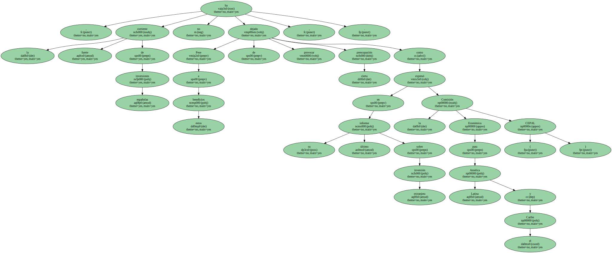La organización , sin embargo , agrega que " las dificultades más serias del proceso tienen su origen en la fragilidad e imperfección de los marcos reguladores de los países receptores " y otros factores internos.
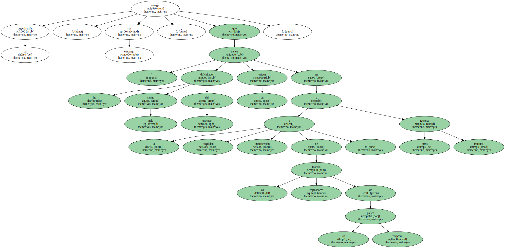Según Renato Grandmont , analista de Deutsche Bank para América Latina , recientes decisiones de las empresas españolas han tenido serias repercusiones en los mercados latinoamericanos.
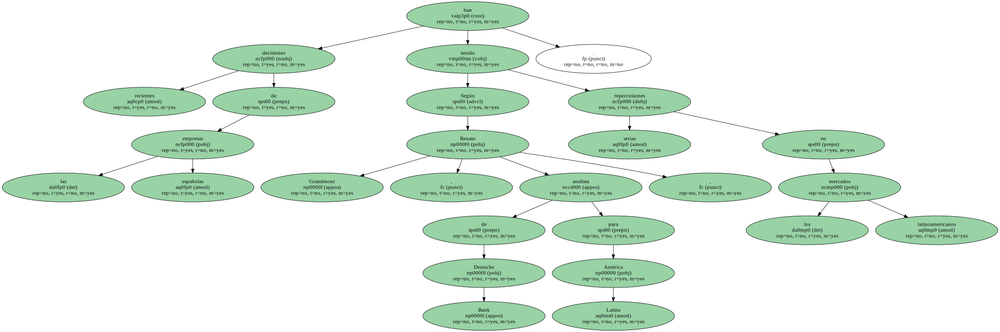En concreto , la decisión de Telefónica de España de aumentar su propiedad en las firmas que controla en Argentina y Perú , " tendrá un impacto muy significativo para los mercados bursátiles de estos países y , por extensión , de toda la región " , al sacar del mercado acciones que están entre las más líquidas e importantes.
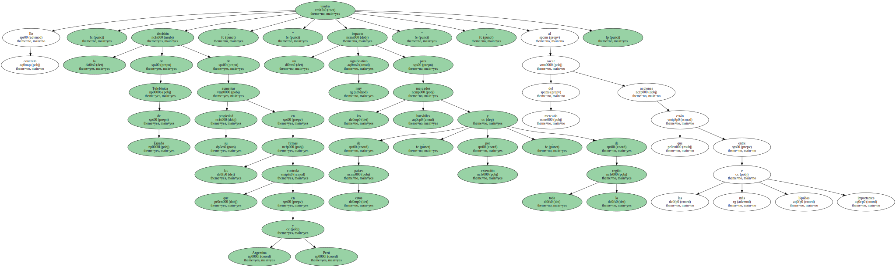Para el analista , sin embargo , esas son las leyes del mercado , y las enseñanzas de estos casos deberían servir para establecer mejores mecanismos de resguardo de los derechos de los accionistas minoritarios , un gran tema que está comenzando a discutirse en los mercados de la región.